Latest images recaptured from dea2f17. Headless fonts may show missing speech glyphs. External githack links were not verified reachable (previous HTTP 403).
めぐる World 3D — 構図・シルエット checkpoint iPhone Human QA未承認。完成・production readyの判定ではありません。既存配置と衝突、2D正本、季節意味論、キャラクターは維持しています。
描画コード固定：dea2f17668958ee37dcd6e557e9b2243f34710dd。森とジャングルの高さ構成、小住宅の壁幅と側面、橋の支柱、水辺の乾いた岸、小物の読みやすさを改善しました。
3D＋perf 通常3D 2D比較 建物・小物20組 地域・水辺・季節 Worldは同じ撮影定義（位置・向き・季節）を使用。アニメーションの瞬間は一致しません。小物は実際のrendererを使う専用stageで、BEFORE由来の固定カメラ。SwiftShaderの画像は実機GPU性能・残像の合格証明ではありません。
地域・水辺・季節の比較 home / countryside forest / jungle river_lake / memory_lake creek / river / pond bridge mountain summer / winter 31 World views — Claude → lighting → silhouette home-vq {"region": "home", "spot": "yard", "yaw": 0, "dz": -150, "name": "home-vq", "jpg": 1, "env": ["day", "sunny", "summer"]}
Claude Geometry / Terrain 17c1bdb · 接地と明暗 dea2f17 · シルエットと地域差 home-house-vq {"region": "home", "spot": "house", "yaw": 90, "dx": 200, "name": "home-house-vq", "jpg": 1, "env": ["day", "sunny", "summer"]}
Claude Geometry / Terrain 17c1bdb · 接地と明暗 dea2f17 · シルエットと地域差 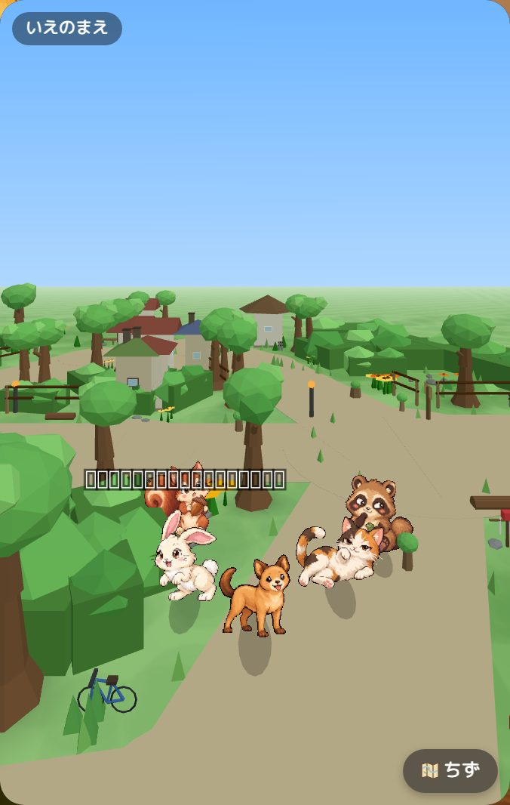
forest-vq {"region": "forest", "spot": "bright1", "yaw": 0, "dz": -200, "name": "forest-vq", "jpg": 1, "env": ["day", "sunny", "summer"]}
Claude Geometry / Terrain 17c1bdb · 接地と明暗 dea2f17 · シルエットと地域差 jungle-vq {"region": "jungle", "spot": "clearing", "yaw": 0, "dz": -200, "name": "jungle-vq", "jpg": 1, "env": ["day", "sunny", "summer"]}
Claude Geometry / Terrain 17c1bdb · 接地と明暗 dea2f17 · シルエットと地域差 city-vq {"region": "city", "spot": "square", "yaw": 0, "dz": -200, "name": "city-vq", "jpg": 1, "env": ["day", "sunny", "summer"]}
Claude Geometry / Terrain 17c1bdb · 接地と明暗 dea2f17 · シルエットと地域差 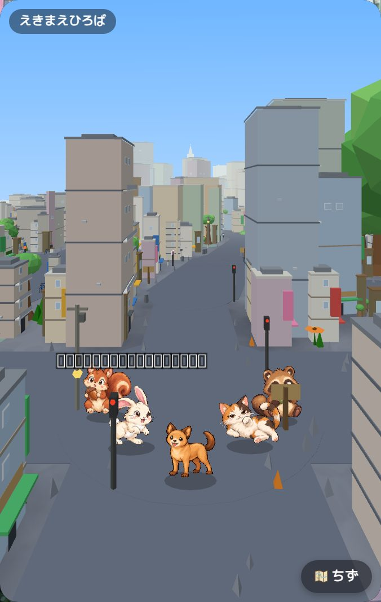
city-arcade-vq {"region": "city", "spot": "arcade", "yaw": 0, "dz": -150, "name": "city-arcade-vq", "jpg": 1, "env": ["day", "sunny", "summer"]}
Claude Geometry / Terrain 17c1bdb · 接地と明暗 dea2f17 · シルエットと地域差 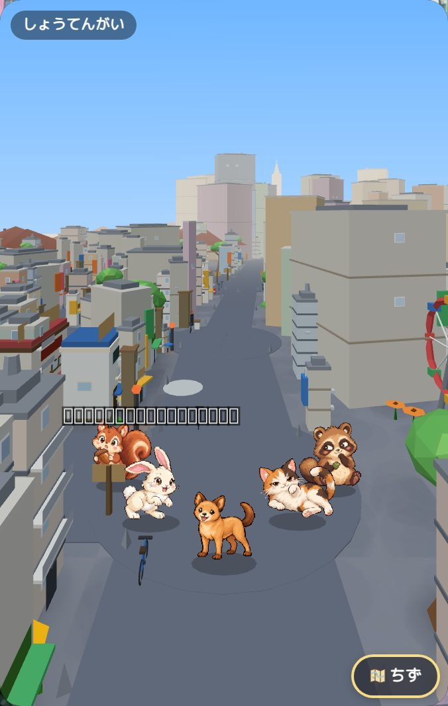
city-market-vq {"region": "city", "spot": "market", "yaw": 180, "dz": 150, "name": "city-market-vq", "jpg": 1, "env": ["day", "sunny", "summer"]}
Claude Geometry / Terrain 17c1bdb · 接地と明暗 dea2f17 · シルエットと地域差 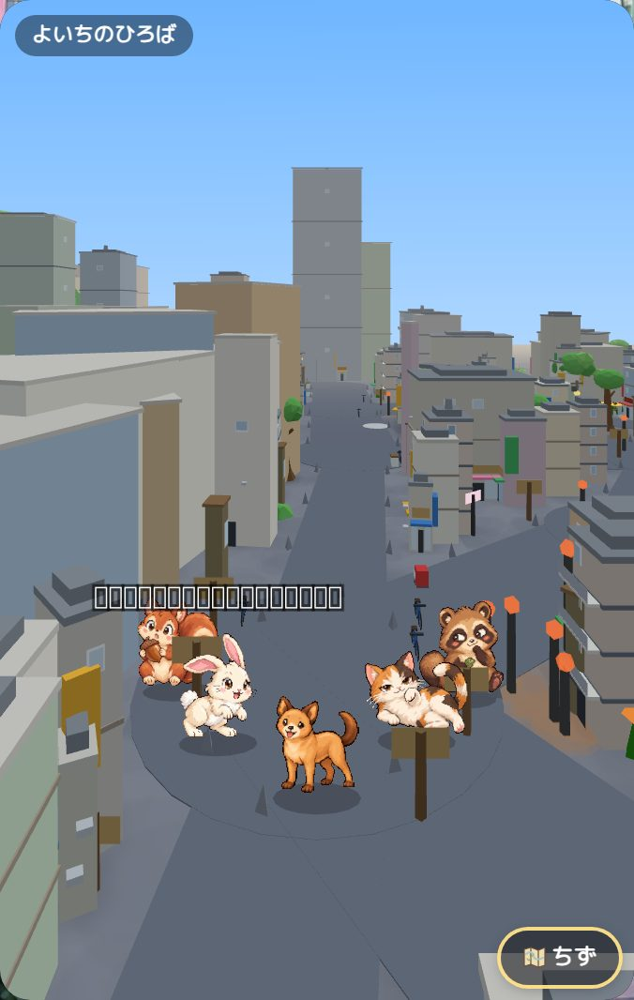
countryside-vq {"region": "countryside", "spot": "village", "yaw": 0, "dz": -200, "name": "countryside-vq", "jpg": 1, "env": ["day", "sunny", "summer"]}
Claude Geometry / Terrain 17c1bdb · 接地と明暗 dea2f17 · シルエットと地域差 mountain-vq {"region": "mountain", "spot": "trailhead", "yaw": 0, "dz": -200, "name": "mountain-vq", "jpg": 1, "env": ["day", "sunny", "summer"]}
Claude Geometry / Terrain 17c1bdb · 接地と明暗 dea2f17 · シルエットと地域差 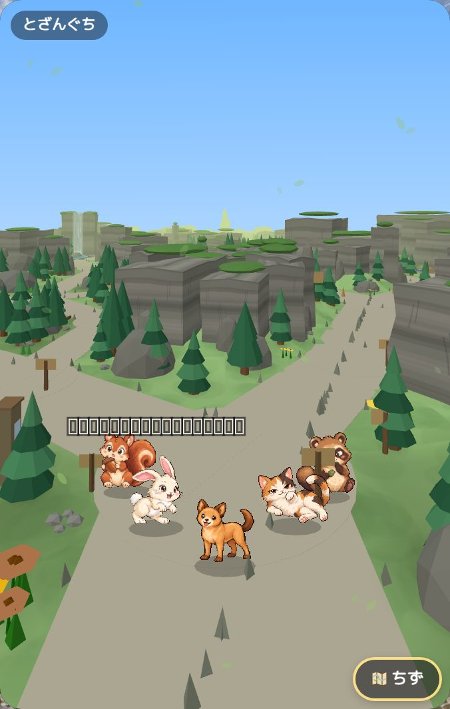
snow-vq {"region": "snow", "spot": "field", "yaw": 0, "dz": -200, "name": "snow-vq", "jpg": 1, "env": ["day", "sunny", "summer"]}
Claude Geometry / Terrain 17c1bdb · 接地と明暗 dea2f17 · シルエットと地域差 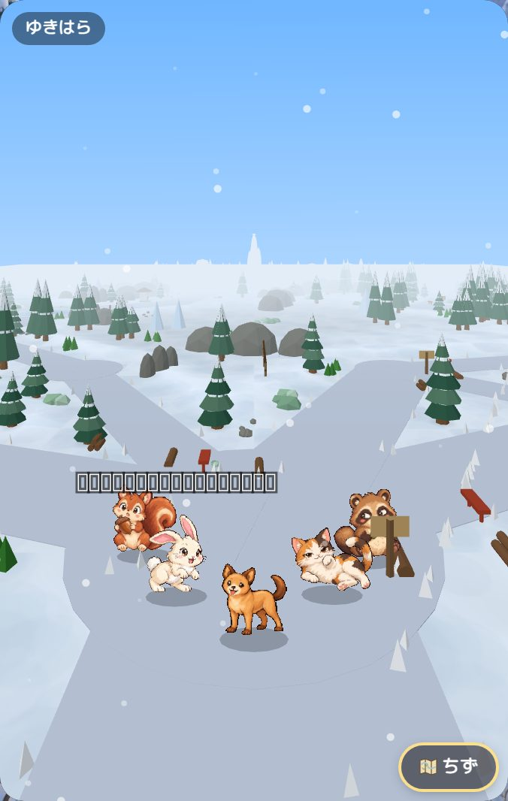
sea-vq {"region": "sea", "spot": "shore", "yaw": 0, "dz": -200, "name": "sea-vq", "jpg": 1, "env": ["day", "sunny", "summer"]}
Claude Geometry / Terrain 17c1bdb · 接地と明暗 dea2f17 · シルエットと地域差 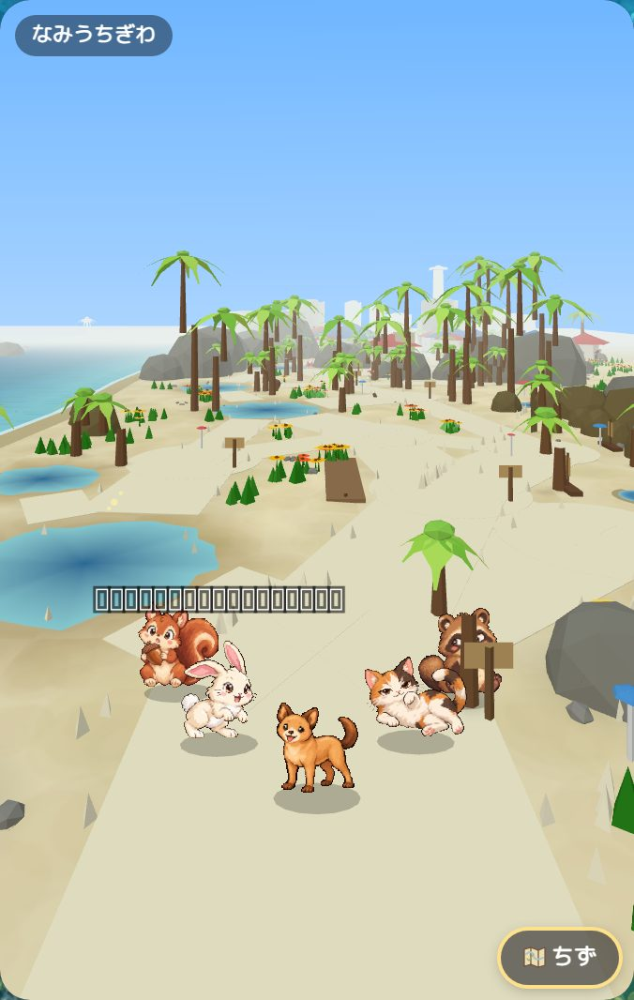
deepsea-vq {"region": "deepsea", "spot": "coralcity", "yaw": 0, "dz": -200, "name": "deepsea-vq", "jpg": 1, "env": ["day", "sunny", "summer"]}
Claude Geometry / Terrain 17c1bdb · 接地と明暗 dea2f17 · シルエットと地域差 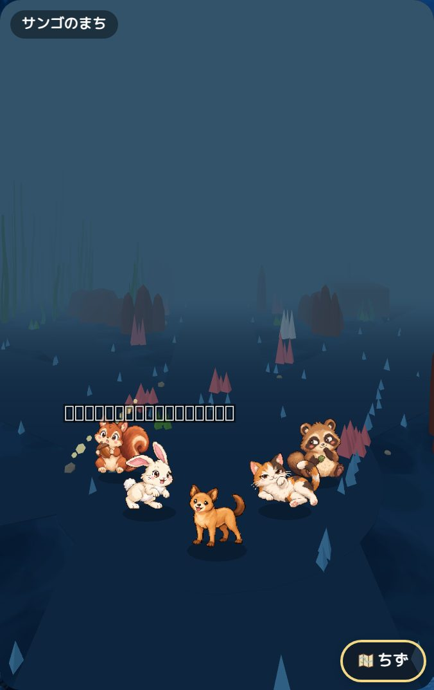
river_lake-vq {"region": "river_lake", "spot": "riverside", "yaw": 300, "dz": -100, "name": "river_lake-vq", "jpg": 1, "env": ["day", "sunny", "summer"]}
Claude Geometry / Terrain 17c1bdb · 接地と明暗 dea2f17 · シルエットと地域差 river-bridge-vq {"region": "river_lake", "spot": "bridge1", "yaw": 0, "dz": -320, "name": "river-bridge-vq", "jpg": 1, "env": ["day", "sunny", "summer"]}
Claude Geometry / Terrain 17c1bdb · 接地と明暗 dea2f17 · シルエットと地域差 desert-vq {"region": "desert", "spot": "well", "yaw": 0, "dz": -200, "name": "desert-vq", "jpg": 1, "env": ["day", "sunny", "summer"]}
Claude Geometry / Terrain 17c1bdb · 接地と明暗 dea2f17 · シルエットと地域差 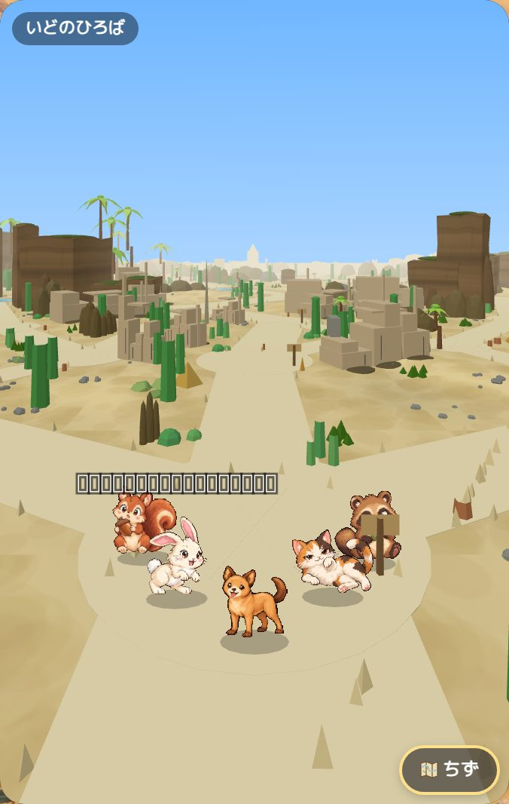
oasis-vq {"region": "desert", "spot": "oasis", "yaw": 0, "dz": -260, "name": "oasis-vq", "jpg": 1, "env": ["day", "sunny", "summer"]}
Claude Geometry / Terrain 17c1bdb · 接地と明暗 dea2f17 · シルエットと地域差 star_stop-vq {"region": "star_stop", "spot": "platform", "yaw": 0, "dz": -200, "name": "star_stop-vq", "jpg": 1, "env": ["day", "sunny", "summer"]}
Claude Geometry / Terrain 17c1bdb · 接地と明暗 dea2f17 · シルエットと地域差 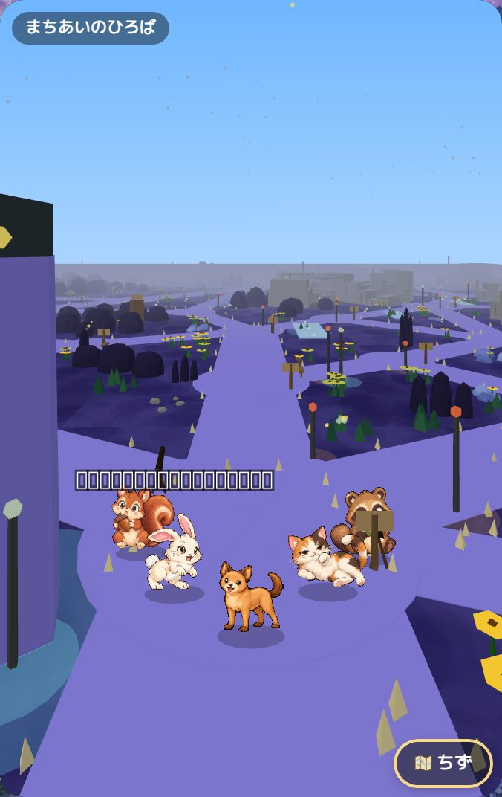
memory_lake-vq {"region": "memory_lake", "spot": "path1", "yaw": 0, "dz": -200, "name": "memory_lake-vq", "jpg": 1, "env": ["day", "sunny", "summer"]}
Claude Geometry / Terrain 17c1bdb · 接地と明暗 dea2f17 · シルエットと地域差 forest-creek-vq {"region": "forest", "spot": "creek2", "yaw": 30, "dz": -300, "dx": 150, "dist": 650, "name": "forest-creek-vq", "jpg": 1, "env": ["day", "sunny", "summer"]}
Claude Geometry / Terrain 17c1bdb · 接地と明暗 dea2f17 · シルエットと地域差 forest-bridge-vq {"region": "forest", "spot": "bridge1", "yaw": 250, "dx": 200, "dz": 120, "dist": 600, "name": "forest-bridge-vq", "jpg": 1, "env": ["day", "sunny", "summer"]}
Claude Geometry / Terrain 17c1bdb · 接地と明暗 dea2f17 · シルエットと地域差 river-stonebridge-vq {"region": "river_lake", "spot": "bridge2", "yaw": 120, "dx": -250, "dz": 150, "dist": 600, "name": "river-stonebridge-vq", "jpg": 1, "env": ["day", "sunny", "summer"]}
Claude Geometry / Terrain 17c1bdb · 接地と明暗 dea2f17 · シルエットと地域差 countryside-river-vq {"region": "countryside", "spot": "meadow", "yaw": 0, "dz": -250, "dist": 650, "name": "countryside-river-vq", "jpg": 1, "env": ["day", "sunny", "summer"]}
Claude Geometry / Terrain 17c1bdb · 接地と明暗 dea2f17 · シルエットと地域差 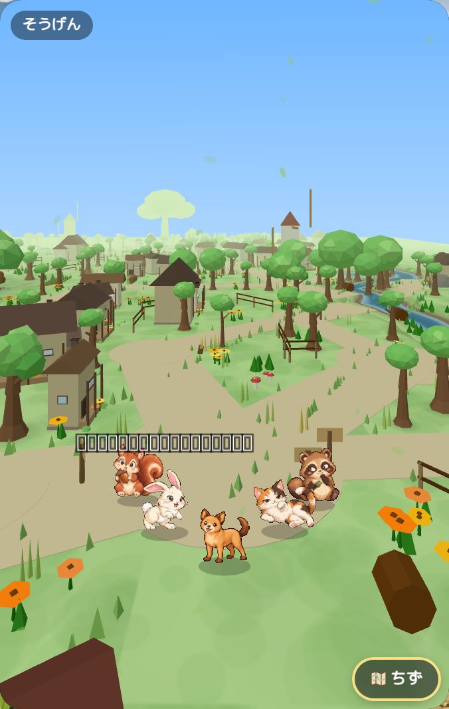
mountain-summer-vq {"region": "mountain", "spot": "mtvillage", "yaw": 0, "dz": -250, "dist": 620, "name": "mountain-summer-vq", "jpg": 1, "env": ["day", "sunny", "summer"]}
Claude Geometry / Terrain 17c1bdb · 接地と明暗 dea2f17 · シルエットと地域差 mountain-winter-vq {"region": "mountain", "spot": "mtvillage", "yaw": 0, "dz": -250, "dist": 620, "name": "mountain-winter-vq", "jpg": 1, "env": ["day", "sunny", "winter"]}
Claude Geometry / Terrain 17c1bdb · 接地と明暗 dea2f17 · シルエットと地域差 river-bridge2-vq {"region": "river_lake", "x": -60, "z": 2250, "yaw": 90, "dist": 520, "name": "river-bridge2-vq", "jpg": 1, "env": ["day", "sunny", "summer"]}
Claude Geometry / Terrain 17c1bdb · 接地と明暗 dea2f17 · シルエットと地域差 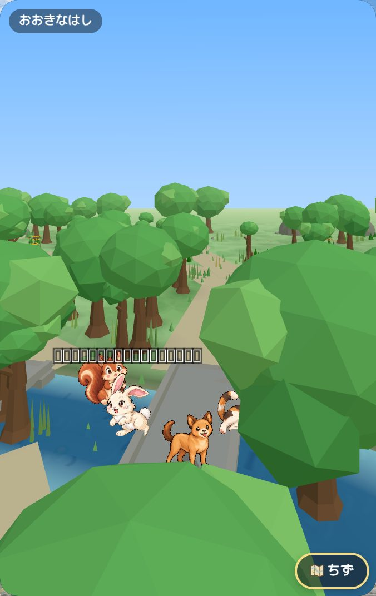
mountain-slope-vq {"region": "mountain", "x": -81, "z": 1880, "yaw": 0, "dist": 560, "name": "mountain-slope-vq", "jpg": 1, "env": ["day", "sunny", "summer"]}
Claude Geometry / Terrain 17c1bdb · 接地と明暗 dea2f17 · シルエットと地域差 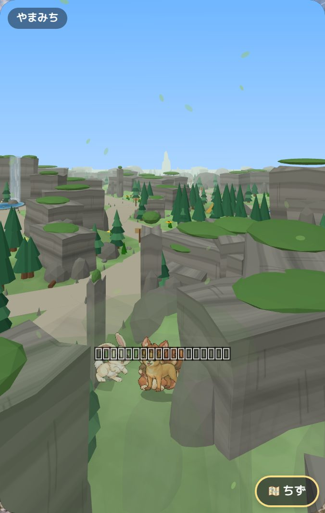
desert-slope-vq {"region": "desert", "x": 2168, "z": 7300, "yaw": 0, "dist": 560, "name": "desert-slope-vq", "jpg": 1, "env": ["day", "sunny", "summer"]}
Claude Geometry / Terrain 17c1bdb · 接地と明暗 dea2f17 · シルエットと地域差 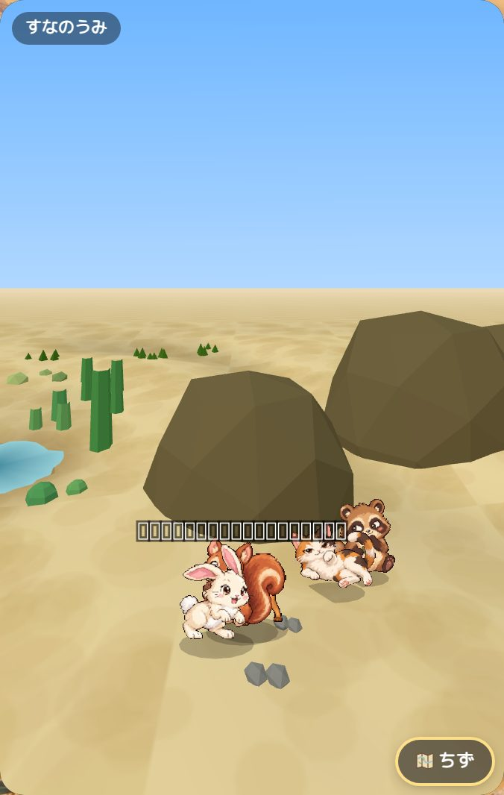
forest-autumn-vq {"region": "forest", "spot": "bright1", "yaw": 0, "dz": -200, "name": "forest-autumn-vq", "jpg": 1, "env": ["day", "sunny", "autumn"]}
Claude Geometry / Terrain 17c1bdb · 接地と明暗 dea2f17 · シルエットと地域差 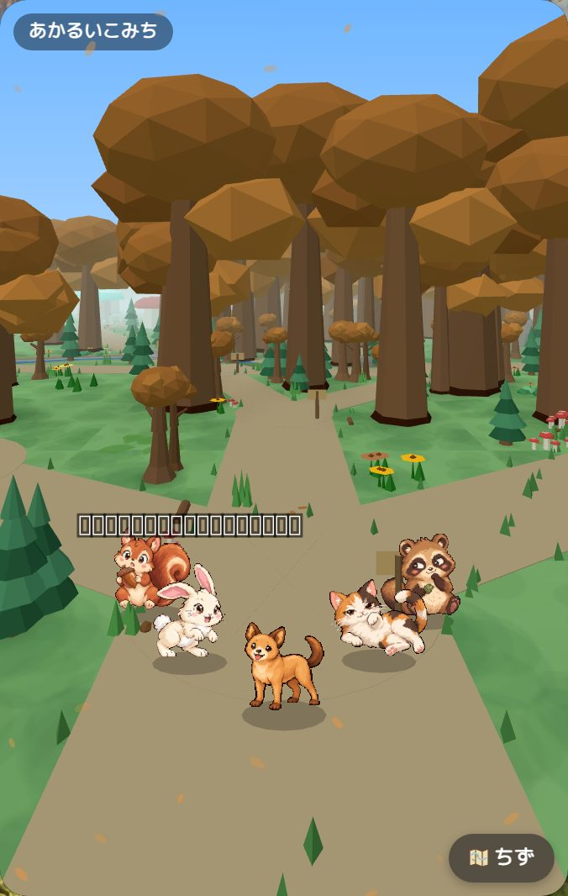
countryside-autumn-vq {"region": "countryside", "spot": "village", "yaw": 0, "dz": -200, "name": "countryside-autumn-vq", "jpg": 1, "env": ["day", "sunny", "autumn"]}
Claude Geometry / Terrain 17c1bdb · 接地と明暗 dea2f17 · シルエットと地域差 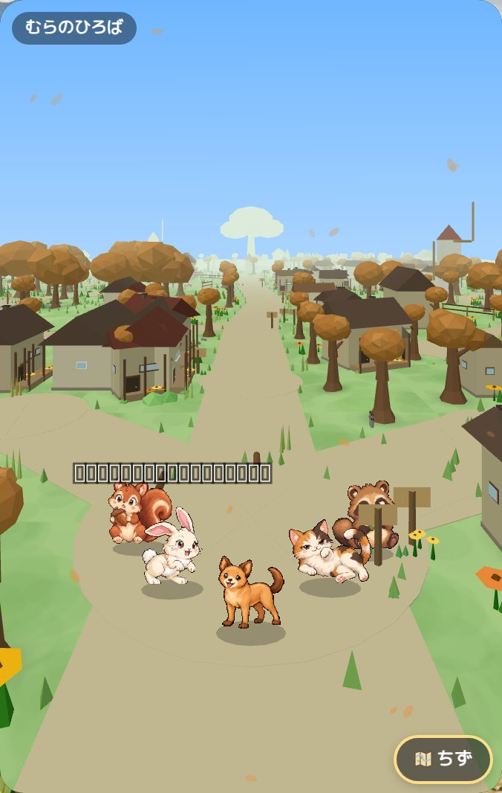
forest-winter-vq {"region": "forest", "spot": "bright1", "yaw": 180, "dz": 200, "name": "forest-winter-vq", "jpg": 1, "env": ["day", "sunny", "winter"], "dist": 650}
Claude Geometry / Terrain 17c1bdb · 接地と明暗 dea2f17 · シルエットと地域差 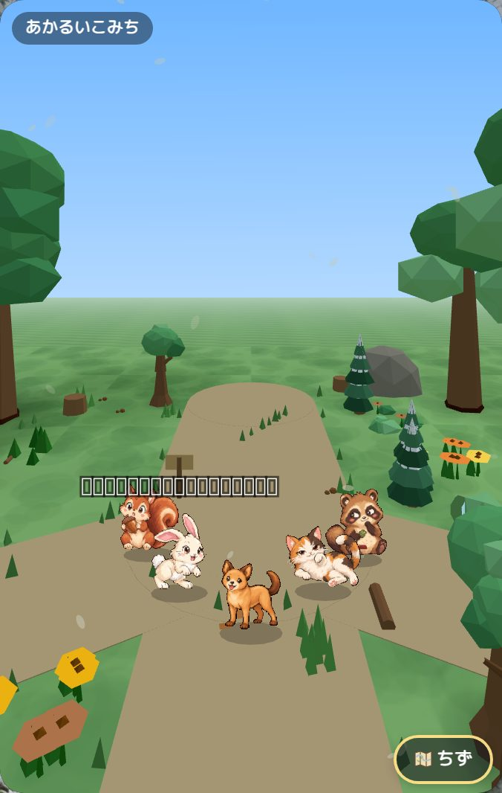
home-spring-vq {"region": "home", "spot": "yard", "yaw": 0, "dz": -150, "name": "home-spring-vq", "jpg": 1, "env": ["day", "sunny", "spring"]}
Claude Geometry / Terrain 17c1bdb · 接地と明暗 dea2f17 · シルエットと地域差 建物9 families・小物11種類 配置・背景の影響を除いた造形監査。ゲーム画面の性能測定ではありません。未変更の対象も比較に含みます。像は形状に加えて、rendererが無視していた頭部の高さを修正。
family-barn family-cabin family-cottage family-farmhouse family-hut family-shed family-shop family-single family-twostorey prop-bike prop-boxprop prop-car prop-ferris prop-ruin prop-signpost BEFORE · 17c1bdb AFTER · dea2f17 prop-stall BEFORE · 17c1bdb AFTER · dea2f17 prop-statue BEFORE · 17c1bdb AFTER · dea2f17 prop-telescope BEFORE · 17c1bdb AFTER · dea2f17 prop-tractor BEFORE · 17c1bdb AFTER · dea2f17 prop-wheel BEFORE · 17c1bdb AFTER · dea2f17